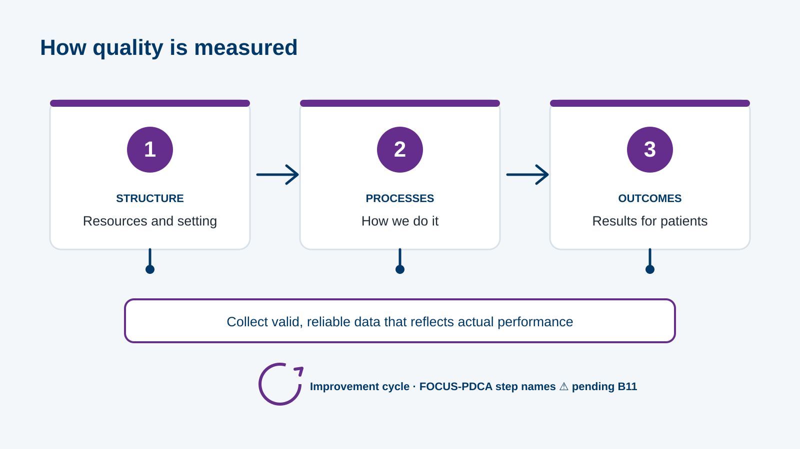
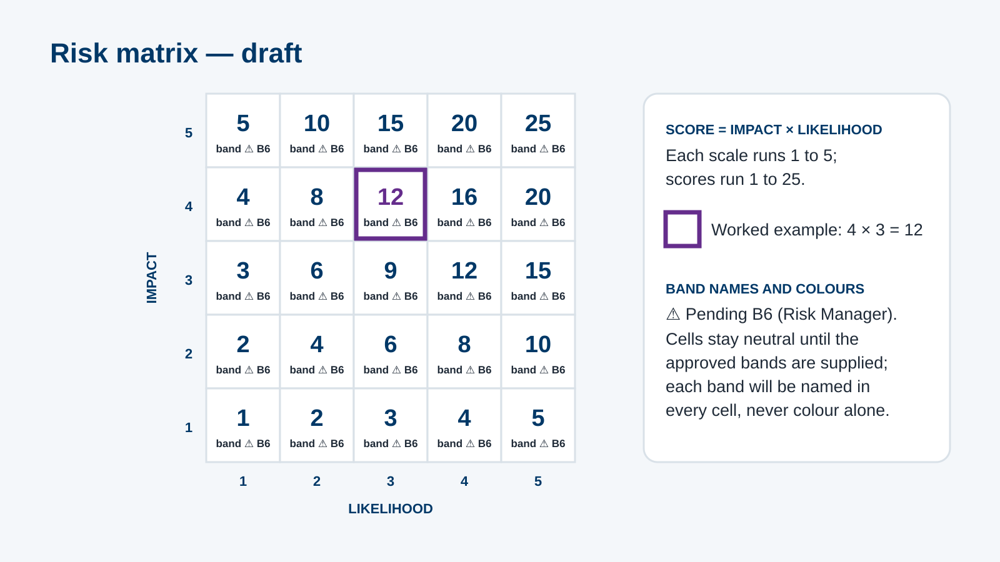
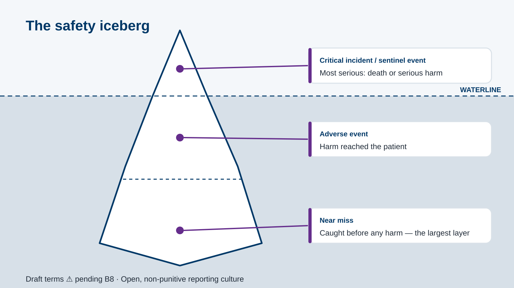

MODULE 07 · CARING
Clinical governance
Quality, patient safety and risk · ~25 minutes
 Noor · Safety liaison
Noor · Safety liaisonqsr-000 · L1 Title · Speaker: Noor · 30 words · companion char-noor-welcome (preview)Clinical Governance: Quality, Patient Safety & Risk · storyboard v0.2 · official client logo, Caring purple #652D8C as the single module colour, and the programme companions Noor and Dr. Omar.
storyboard.md; ⚠ PENDING policy values (B1–B11, D8–D10, NEW-01) stay open. Companion images are low-resolution previews of the shared programme set; three avatar crops are still to make.Senior staff nurse and patient-safety liaison. Narrates every screen except where Dr. Omar speaks. Visible on qsr-000, 002, 021, 051, 092.
Family physician. Speaks and appears on qsr-031 (risk example), qsr-040 (iceberg tip) and the two-voice close qsr-092.
MODULE 07 · CARING
Quality, patient safety and risk · ~25 minutes
Noor · Safety liaisonqsr-000 · L1 Title · Speaker: Noor · 30 words · companion char-noor-welcome (preview)L2 Section opener
SECTION 1 OF 7 · “Doing the right things right — the first time, and every time.” ⚠ PENDING B1
qsr-001 · content_slide · L2 Section opener · Speaker: Noor · 60 words · no companion visible (voice only)L4 Question
Have you ever noticed something unsafe at work and not said anything? · Anonymous response handling ⚠ PENDING NEW-01
qsr-002 · poll · L4 Question · Speaker: Noor · 24 words · companion Noor: char-noor-listeningL3 Content
Structure → Process → Outcome · Collect valid, reliable data · FOCUS-PDCA improvement cycle ⚠ PENDING B11

qsr-010 · labeled_diagram · L3 Content · Speaker: Noor · 77 words · diagram qsr-img-spo (draft SVG) · no companion visible (voice only)L4 Question
Resources · Actions carried out · Patient results
qsr-011 · drag_drop · L4 Question · Speaker: Noor · 18 words · no companion visible (voice only)L4 Question
Nine steps · One repeating cycle · Exact wording ⚠ PENDING B11
qsr-012 · sorting · L4 Question · Speaker: Noor · 19 words · no companion visible (voice only)L3 Content
Identification · Communication · High-alert medication · Safe procedures · Hand hygiene · Fall prevention ⚠ PENDING B3
qsr-020 · hotspot · L3 Content · Speaker: Noor · 75 words · no companion visible (voice only)L5 Scenario
qsr-021 · decision_scenario · L5 Scenario · Speaker: Noor · 34 words · companion Noor: char-noor-avatar-concern, char-noor-avatar-happy (avatar crops to make; nearest preview shown)L4 Question
Match each daily practice to one goal. ⚠ PENDING B3–B5
qsr-022 · matching · L4 Question · Speaker: Noor · 18 words · no companion visible (voice only)L4 Question
Order the hand-hygiene moments. ⚠ PENDING B10
qsr-023 · sorting · L4 Question · Speaker: Noor · 18 words · no companion visible (voice only)L4 Question
Identify · Assess · Manage · Monitor · Report
qsr-030 · sorting · L4 Question · Speaker: Noor · 20 words · no companion visible (voice only)L3 Content

qsr-031 · worked_example · L3 Content · Speaker: Omar · 102 words · diagram qsr-img-matrix (draft SVG) · companion Dr. Omar: char-omar-thinkingL4 Question
Impact 5 × likelihood 2 = ___ · Band: ___ ⚠ PENDING B6
qsr-032 · fill_blank · L4 Question · Speaker: Noor · 18 words · diagram qsr-img-matrix (draft SVG) · no companion visible (voice only)L4 Question
Reduce · Transfer · Accept · Avoid — wording ⚠ PENDING B7
qsr-033 · matching · L4 Question · Speaker: Noor · 19 words · no companion visible (voice only)L3 Content

qsr-040 · labeled_diagram · L3 Content · Speaker: Omar · 69 words · diagram qsr-img-iceberg (draft SVG) · companion Dr. Omar: char-omar-avatar-neutralL4 Question
Critical / sentinel · Adverse · Near miss ⚠ PENDING B8
qsr-041 · drag_drop · L4 Question · Speaker: Noor · 20 words · no companion visible (voice only)L4 Question
“If you report a near miss you caused, you will be disciplined.” ⚠ PENDING B8
qsr-042 · true_false · L4 Question · Speaker: Noor · 19 words · no companion visible (voice only)L3 Content
Report: clinical + non-clinical events · When: 24 hours ⚠ PENDING B9/D8 · Where: digital form or email ⚠ PENDING B9 · System review follows
qsr-050 · content_slide · L3 Content · Speaker: Noor · 75 words · no companion visible (voice only)L5 Scenario
qsr-051 · decision_scenario · L5 Scenario · Speaker: Noor · 38 words · companion Noor: char-noor-avatar-neutral, char-noor-avatar-happy, char-noor-avatar-concern (avatar crops to make; nearest preview shown)L6 Results / close
Results by objective · Review any area below threshold
qsr-090 · results_breakdown · L6 Results / close · Speaker: Noor · 25 words · no companion visible (voice only)L4 Question
What will you say the next time you notice something unsafe?
qsr-091 · poll · L4 Question · Speaker: Noor · 19 words · no companion visible (voice only)L6 Results / close
Measure quality · apply patient-safety goals · score risk and classify events · follow reporting workflow · approved links ⚠ PENDING B3/B9

qsr-092 · summary · L6 Results / close · Speaker: Noor + Omar · 43 words · companion Noor + Dr. Omar: char-noor-success, char-omar-avatar-happy (avatar crops to make; nearest preview shown)